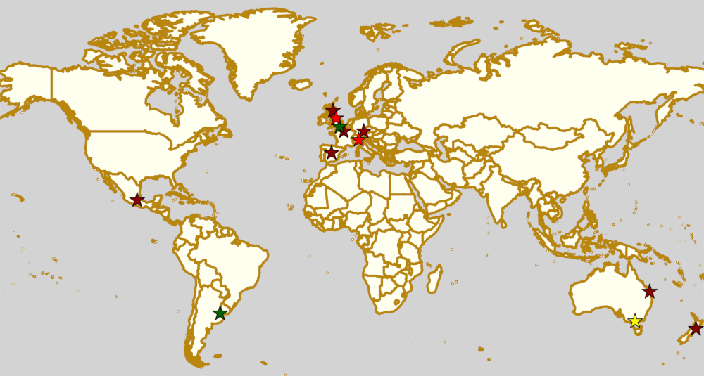

Weekend Highlights: 13 July 2019
This weekend's highlights are back to our 1 update format as this is a little quieter. There's a bunch of exciting "summer" events on, though, which we should highlight up here: in the UK, Eastbourne Extreme takes derby outside and to the coast for a 2 day mixed tournament; in France, Saint-Gratien once again hosts the pan-France Tournament of 6 Regions; and in Bundaberg, Australia, the 2019 SKATE of Emergency continues to raise funds for emergency services.
(We'd also like to highlight the next "Un sol para lxs oficialxs", raising travel funds for Argentinian officials to support Roller Derby across the country; and on a different note ALL-IN's Short Track Experiment event in Leeds, exploring the new ruleset and how it might help to sustain & develop the sport.)
This article amended on Tuesday for two late announced fixtures in Spain and Mexico.
The rules are, as usual: highlights limited to 1 event per country, with an "extra" event allowed for a different kind of fixture (so, 1 tournament and 1 bootcamp), or if they involve Scottish leagues (since we are the Scottish Roller Derby Blog). Other notability might also allow the extra event - great posters, notable teams, etc. (League birthdays may count as "special" enough, at our discretion ;) )
In a bid to make this list as useful as possible, we've avoided links to Facebook except where noted. (Links to Teams are to non-Facebook resources - Instagram, or actual team pages - we'd strongly recommend that Teams get themselves an actual webpage [we can help host one if you need help]).
Locations are roughly organised East-West (with things before the weekend out sequence at the start).
Sat: Upper Hutt, New Zealand
Remutaka Roller Derby hosts Team Crazy Legs Aotearoa, the New Zealand branch of the exhibition team supporting, and for, people with invisible illnesses (including, but definitely not limited to, mental illnesses). This is an Open To All genders bout.
- Remutaka Roller Derby (Upper Hutt O) versus Team Crazy Legs Aotearoa (exhibition O)
Event starts: 1930 Saturday (doors open)
Venue: Upper Hutt Rollerskating Club, 4A Railway Avenue, Upper Hutt, New Zealand
Sat-Sun: Bundaberg, QLD, Australia
Rum City Derby Dolls host the 2019 edition of SKATE of Emergency, their annual tournament supporting the emergency services in Queensland. As usual, this is a two-day event, with short-format games allowing a full 6 team round robin (15 games), plus a black v white scrimmage, in just two days!
- Teams competing:
- Brisbane City Rollers' Rahmones
- CQ Misfits
- Fraser Coast United Rollers
- Mackay City Roller Maidens
- Rum City Derby Dolls (Bundaberg)
- Sun State Roller Derby's Killer Bees
Event starts: 0800 Saturday (doors open)
Venue: Shalom College, 9 Fitzgerald St, Bundaberg, QLD, Australia
Sun: Dandenong, VIC, Australia
Statewide Stampede and Skate Victoria co-host a Derby Refereeing 101 Workshop, as part of the Statewide Stampede tournament's development initiative. This workshop is intended to help potential referees build a foundation for future officiating, and thus support leagues and clubs in Victoria in building a solid officiating base. The workshop is coached by Rebel Clef, and the SWS refereeing team.
Event starts: 0900 Sunday
Venue: The Shed, Greaves Reserve, Bennet Street, Dandenong, VIC, Australia
Sat: Regensburg, Germany
[FACEBOOK LINK] [FTS LINK (Bundesliga D2)]
Roller Derby Regensburg host a double-header of Roller Derby action, including a Bundesliga Division 2 game! The second bout is also interesting, as it's a rarely-seen "regional team" game, pitting Bavaria against Austria (or at least, the central part of Austria)!
- Rolling Rat Pack (Regensburg) versus Bashlorettes (Kassel) [Bundesliga D3]
- Bavarian Battle Beasts (Bavaria (Munich+Nürnberg+Augsburg?)) versus Steelcity's Dusty Rhinos (Austria (Linz+Graz+Salzburg))
Event starts: 1430 Saturday
Venue: Clermont-Ferrand-Halle. Regensburg, Germany
Sat: Bergamo, Italy
The Crimson Vipers host an end-of-season scrimmage, against the World. Entertainment by Dan Vapid and the Cheats at half-time.
- Crimson Vipers (Bergamo) versus All-Stars (exhibition team)
Event starts: 1200 Saturday
Venue: Piscine Italcementi, Via Dello Statuto, 24128 Bergamo, Italy
Sat-Sun: Saint-Gratien, France
Roller Derby Panthers host the 2019 edition of one of our favourite themed French tournaments: Le Tournoi des 6 Régions. This year, the regions of France are represented by teams named as puns on the names of various french cheeses, or cheese-based-foods. We've tried to list the team names with a direct translation, and then what we think are the cheese being punned on in [ ], but our French is not perfect, so we're probably wrong for some of these.
- Team Names:
- Team Embuche de Chevre ("Goats's Chew" ) [Goat's Cheese?]
- Team Faux-Magicien-nes ("False Magicians" )
- Team Entree-Pack-Cheesecake ("Entry Pack Cheesecake") [Cheesecake?]
- Team Mordu-es de Fondu-es ("Fondue Bites") [Fondue?]
- Team Rock Fort-es ("Rock Forts") [Roquefort]
- Team Vache Kir'hit (Kir-hit Cows) [Vache qui Rit - Laughing Cow]
Event starts: 1000 Saturday
Venue: Gymnase Picolo. 28 rue du Picolo, Saint-Gratien, Ile-De-France, France
Sat-Sun: Eastbourne, UK
Eastbourne Roller Derby host the return of the south-of-England's annual outdoor derby extravaganza, Eastbourne Extreme. As always, weather permitting, this will be 2 whole days of Roller Derby tournament outside on the Eastbourne coast. Eastbourne Extreme is raising funds for "Warming Up the Homeless", a charity whose purpose is pretty obvious from the name.
- Events:
- WFTDA-gender-policy tournament (Saturday)
- Bourne Bombshells (Eastbourne A)
- Brighton Rockerbillies (Brighton B)
- Terra Hurtz (Killa hurtz B | Chelmsford)
- Surrey Roller Girls
- OTA-gender-policy Roller Derby Sevens tournament (Saturday)
- Bomb S'quad (Eastbourne M)
- Eastbourne Extreme 2019 Challenge Team
- Surrey Jammerwockies (Surrey M)
- Junior Derby tournament (mixed teams, Saturday + Sunday)
- Team Black
- Team White
- Team Purple
- "Adults tournament" (mixed teams, gender-policy division, Sunday)
- Rookie WFTDA-gender Black versus White
- Intermediate MRDA-gender Orange versus Lime-Green
- Intermediate WFTDA-gender (Yellow versus Blue) and (Red versus Black)
- Advanced MRDA-gender Red versus Blue
- Advanced WFTDA-gender Pink versus Blue
- WFTDA-gender-policy tournament (Saturday)
Event starts: 1000 Saturday
Venue: Fisherman's Green?, Eastbourne, UK
Sat: Leeds, UK
ALL IN - Community Roller Derby hosts a half-day of exploration of the new Short Track Roller Derby ruleset from Rolla Skate Club , hosted by Hydra. As well as looking at, and playing, the full Short Track rules, Hydra will be introducing low-contact rules options, for allowing non-mins-passed, but low-contact-ready skaters to play. This is intended to be a low-pressure experience, and part of the interest is to provide new ways for people to enable more derby, for more people.
- Introduction and discussion of Short Track Roller Derby
- Low Contact Rules, OTA-policy scrimmage
- Discussion post game
- Low Contact Rules, WFTDA-policy scrimmage
- Full contact OTA-policy scrimmage
- Discussion.
- Full contact WFTDA-policy scrimmage
Event starts: 1200 Saturday
Venue: Ramgarhia Leeds Sport & Leisure Centre, 8 Chapeltown Road, Leeds, UK
Sat: Dundee, Scotland
Dundee Roller Derby host another single-header for their B team (who are having a very busy schedule this season!). This time they're hosting Falkirk/Stirling's Bairn City Rollers for a game.
- Bonnie Colliders (Dundee B) versus Bairn City Rollers W (Falkirk/Stirling)
Event starts: 1450 Saturday (doors open)
Venue: Dundee International Sports Centre, Mains Loan, Dundee, Scotland
Sat: Madrid, Spain
Roller Derby Madrid host the last game of their season, just the weekend after winning the first ever National Championships; and this is an international bout!
- Roller Derby Madrid versus Switchblade (Lille A)
Event starts: 1800 Saturday (doors open?)
Venue: Polideportivo Plata y Castañar, Paseo de Plata y Castañar, Madrid, Spain
Sat-Sun: Buenos Aires, Argentina
The Argentinian Officiating community host another edition of "Un sol para lxs oficialxs": the irregular series of fundraisers to support travel for Argentine officials. This edition supports officiating at Gatorneo 2019 in Mendoza; the distribution of Roller Derby in Argentina being what it is, most official will be travelling across the width of the country to support that tournament, so all funds are important! (For perspective, it is almost 1000 km from Buenos Aires to Mendoza, in a straight line... Argentina is big.) Un sol para lxs Oficialxs, as always, works as a weekend of roller derby, full of open-subscription games (in this case, 5 over the weekend) - all funds go towards officiating travel.
- MRDA-gender-policy mixed-teams
- WFTDA-gender-policy "C-level" mixed teams scrimmage.
- "Triangular" round-robin for 3 "B-level" mixed teams.
Event starts: 1000 Saturday
Venue: Avenida Curapaligüe 1100, 1406 Ciudad de Buenos Aires, Argentina
Sun: Iztapalapa, Mexico
[FACEBOOK LINK] [FTS LINK] [FTS LINK] [FTS LINK]
Burdel Zombie host a "Triangular +1" fixture - 3 games, but with 4 teams competing overall, of Mexican derby. As we approach the 2019 Mexican National tournament series, all the teams are trying to get more games in to improve their rating, and thus placement in the qualifiers.
- Quadtlicues (Mexico City | MCRD ) vs Tekillerass (Mexico City | LRDCM )
- Furias Negras (Puebla) vs Burdel Zombie (Mexico City | LRDCM )
- Tekillerass vs Furias Negras
Event starts: 1000 Sunday (first game)
Venue: Escuela de Formación Deportiva Salvador Allende, Av Antonio Díaz Soto y Gama s/n, Iztapalapa, Mexico